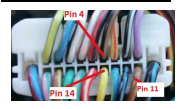
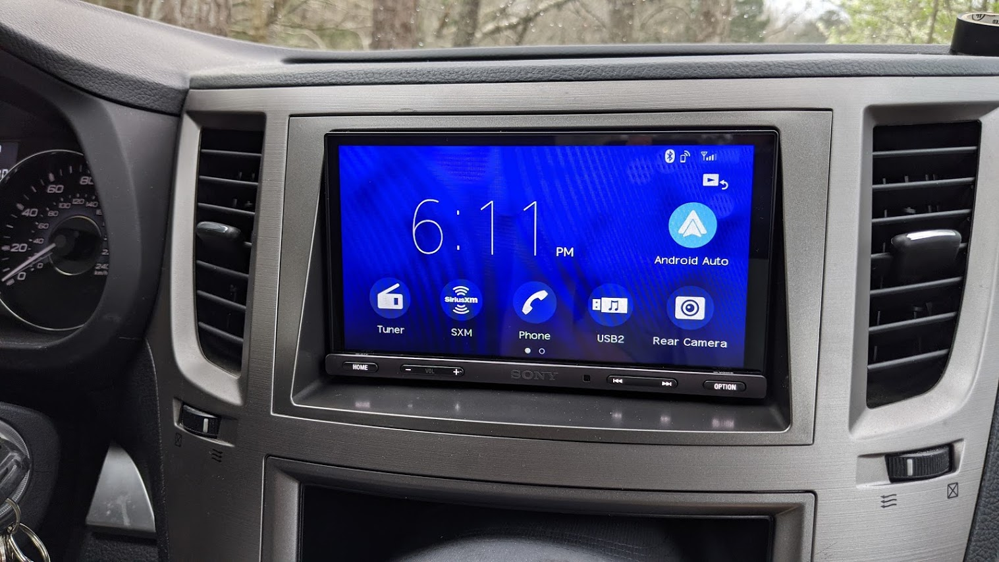

Tools Needed
- Phillips head screwdriver
- Trim removal tool
- Aftermarket radio
- Wire strippers or small knife
- Metra Oubtack DIN adapter
Install Guide
Congrats, you've completed the hardest part. Now let's move on to getting it actually installed in the car.
First, you are going to want to use your trim removal tool to pop off the trim around your factory head unit. This should be pretty easy to pop out and the trim removal tool will keep you from leaving scratches. Once that is removed, unscrew the four phillips head screws around the factory head unit. The radio then should slide out and you can unplug the wiring harness and antenna cable from the back.
Next, go ahead and install your aftermarket head unit into the Metra Outback DIN adapter of your choice and plug the wiring harness you made into the rear of the radio. Begin placing it into the car while routing the cabels down and behind the trim inside the dash. Once it is in place, reinstall the four screws around the radio you removed previously. Now you will want to connect the harness from your head unit to the factory harness in the car.
Now, remember the grey/red wire we left out of the harness before? You are going to want to locate the wire in pin 14 of your harness (pictured below) and splice the grey/red wire into it. You will only need to remove a small amount of insulation around the wire to splice into it. Be sure to reinsulate when you are done.
Once completed, you should be able to reinstall your trim piece and your head unit installation is complete. If you are experiencing any issues, I have a troubleshooting section that may assist.
